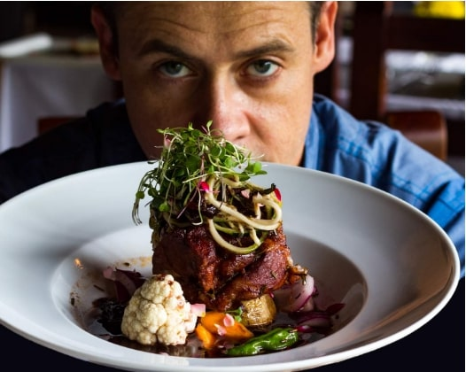

CALL US:800 3456 7890
CANADA-TORONTO,901 QUEEN STREET,DOWNTOWN, CA-907
Our Story |
If you are looking for best food in Toronto, JUST FOR FOODIES Restaurant is the one place you might want to visit. Having served patrons for nearly two decades, the restaurant offers flavourful meals made with fresh, tasty ingredients. The food is prepared right on the spot and the selections are astonishing. There is something on the menu that will satisfy just about everyone. Of the family restaurants Toronto has to offer, Just For Foodies Restaurant is the one with both stellar service and stellar food. Just For Foodies was started up in 1996. Gabriel’s location was chosen to offer a downtown experience in the West End, providing fine dining at an affordable price while maintaining the highest standards of quality. |
|---|---|
Our Chef |
We have worlds best well trained chefs in our restaurant. They have a wide knowledge of cooking and flavours. They make variety of dishes with great food hygiene rules. |